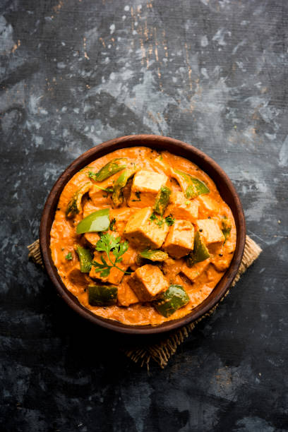

Kadhai Paneer

Description
Kadai Paneer paneer (Indian cottage cheese) and bell peppers cooked in a spicy masala. This restaurant style Kadai Paneer gets its unique flavor from freshly ground spices like coriander and red chilies! Enjoy it with naan or paratha.
Here I would provide a recipe for this amazing paneer dish. Make sure to treat your taste buds by trying this out!
Ingredients:
- 1 cup Paneer measured thawed
- 2 Onion cubed
- 3 Tomatoes chopped
- 1 Capsicum cubed
- 1 tablespoon Ginger finely chopped or julienne
- 2 Green chillies slit
- 1.5 teaspoon Red chilli powder
- 1 tablespoon coriander seeds powder
- 1 teaspoon Garam masala powder
- ¼ teaspoon Turmeric powder
- Salt
- ½ teaspoon Kasoori methi
- 3 tablespoon Coriander leaves chopped
Steps:
- Heat oil in a pan/kadai and temper with the coriander seeds. You can crush it roughly or add whole too.
- Follow by adding ginger and give a quick fry.
- Add chopped onion, green chillies slit and fry till onion turns transparent.
- In goes chopped tomatoes followed by salt.
- Add all the powders- chilli, coriander seeds, garam masala and turmeric.
- Fry till tomatoes turn gooey. Continue frying till oil oozes out and then add the cubed capsicum and fry for 1 minute.
- The crunchiness and colour should not change.
- Add the paneer cubes (paneer cubes should be kept immersed in hot water till use) and crush the kasoori methi within you palms and add it to it.
- Add ½ cup water and mix well. Cook till the masala coats paneer well and the gravy is thick almost dry. Not too dry too.
- Add the chopped coriander leaves lastly and transfer to the serving dish.